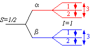

HYSCOREBOX
HYSCORE simulations interface
by Alexey Silakov, 2003-06
The EasySpin (www.esr.ethz.ch) syntax rules are used for defining spin-hamiltonian parameters
Units:
- Sys.A, Sys.Q etc -> in [MHz]
- Exp.Field -> [mT]
- Exp.phi, Exp.theta -> [degree], NOT in [radian]
- Exp.mwFreq -> in [GHz]
Syntax:
- Sys/Opt/Exp/Shift.fld_name = any_Matlab_expression
- i.e. A(1,2)=[1.24, 1.22]
- Parameters additional to EasySpin's ones:
- Sys.Aiso - isotropic hpf <0>, added to A parameter
- Exp.MaxFreq - specifies maximum frequency for a HYSCORE specrtum (instead of Exp.Range). Usefull for Opt.Sim='fd' (see below)
- Exp.gField can be used instead of Exp.Field, to specify current magnetic field. In this case, actual magnetic field is calculates according to specified MW frequency (Exp.mwFreq).
>> Exp.Field = (Exp.mwFreq*1e+9*planck)/(Exp.gField*bmagn*1e-3)
- Opt.Sim - choosing calculation mathod
- >> 'sketch' - calculation of the frequencies
- >> 'fd' - complete HYSCORE simulation in frequency domain using kv_hyscorefd script
- >> 'sketchhfdec' - HF decoupling simulation, sketch like
- >> 'sketch2DeseB' - sketch simulation of 3pESEEM vs Bo experiment
- >> 'kvmr22d' - compute 3pESEEM spectrum vs Bo using kvmr2 (based on MR2 program of Ed Reijerse)
- >>>>> Exp.Field - is the 2x1 vector ([Bstart, Bend])
- >>>>> Exp.nFPoints - number of field positions used
- Opt.ShowCor - used by 'sketch' to show only selected correlation ridges
- Valid only for I=1. Syntax: Opt.ShowCor = [alpha_manifold, beta_manifold]
- Example: Opt.ShowCor = [1, 1; 1, 2; 2, 2], where numbers are NMR transitions:
- 
- Opt.ProdRule - if <1>, product rule is used, if number of nuclei >1 (for Opt.Sim='fd')';
- Opt.KillNeg - if 1 (default <0>), makes negative part of timedomain signal =0 (for Opt.Sim='fd')';
- Opt.ShowOri - if 1 (default <0>), shows selected orientations in 3D picture in separate figure (for Opt.Sim='fd')';
-
- Shift. parameters:
- >> x and y - ('sketch') simulation shift along corresponding axis <0>
- >> 'LineStyle', 'Marker', 'LineWidth' are usefull with 'sketch'. See LineSpec in ML help for details.
- >> 'contour' - usefull for 'fd'. Format: [begin:step:end], were contour levels are normalised to max of data;
- >> 'ding' - used by 'fd' , volume of the "ding" sound after finishing simmulation
- Maximum value = 1';
- >> 'Overlay' - used by 'fd', 'kvmr22d' , overaly calculated spectrum (as contours) with exp. data (density)
-
- Additionaly, 'linspace'-like internal function "lin" can be used
- to set several parameters (a kind of shortcut)
- For example see "HYSCORE_def" script;